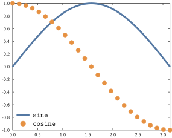
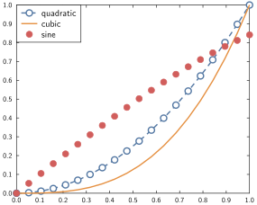
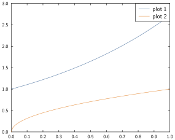
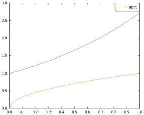

Legend

Syntax
The relevant command here is
legend
with the general syntax being:
legend(objects; options...)At the moment, a legend can be added for
- Line and scatter plots
- Bar plots and histograms
- Fill plots
Automatic
The drawings that can have a legend all accept a keyword indicating the legend entry/entries. Subsequent call to legend(; options...) will build the legend based on these. For groups of drawings, the keyword can take a vector of strings indicating the legend entries.
x = range(0, stop=1, length=20)
plot(x, x.^2, x.^3, lw=0.05, ls=["--", "-"], marker=["wo", "none"],
keys=["quadratic", "cubic"],)
scatter!(x, sin.(x), key=["sine"])
legend(; position="top-left")
| Keyword | Valid for | Example |
|---|---|---|
key, label | plot, scatter, plot3, scatter3, bar, hist, fill_between | plot(sin, 0, π, label="sine") |
keys, labels | plot, scatter, bar | plot(x, y, z, labels=["func 1", "func 2"]) |
For plot, scatter and bar, it doesn't matter whether you use the plural keyword or the singular, the same function is used in the background. It may just be more readable to use the plural if you are labelling several objects in one shot.
Two special cases may be useful:
- if no label(s) are passed but
legendis called, default legend entries will be used for all elements, - if only some label(s) are passed, only those will appear in the legend.
Consider the two examples below:
plot(exp, 0, 1)
plot!(sqrt, 0, 1)
legend()
plot(exp, 0, 1)
plot!(sqrt, 0, 1, label="sqrt")
legend()
Element by element
Another approach is to collect the handles of what you have drawn and pass the vector of handles to legend along with a matching vector of strings.
x = range(0, stop=π/2, length=100)
d1 = plot(x, sin.(x), lw=0.05)
d2 = plot!(x, cos.(x), lw=0.05)
fill_between!(x, sin.(x), cos.(x), alpha=0.2)
x = x[1:5:end]
d3 = scatter!(x, sin.(x) .* cos.(x), msize=0.3, marker="fdiamond")
legend([d1, d2, d3], ["sine", "cosine", "scatter"])
xlim(0,π/2)
If you combine bar, hist or fill_between legend entries with scatter legend entries, it may be happen that descriptive symbols are misaligned in the legend. If that's the case for you, please open an issue with a reproducing example. This is a GLE bug and a GPlot workaround may be provided in the future.
Styling options
wip as of 22/03/2019
Aspect
- off/on
- bgcol
- nobox/box
- bgalpha
Positioning
- position/pos
- margins, offset
Text styling
- see styling